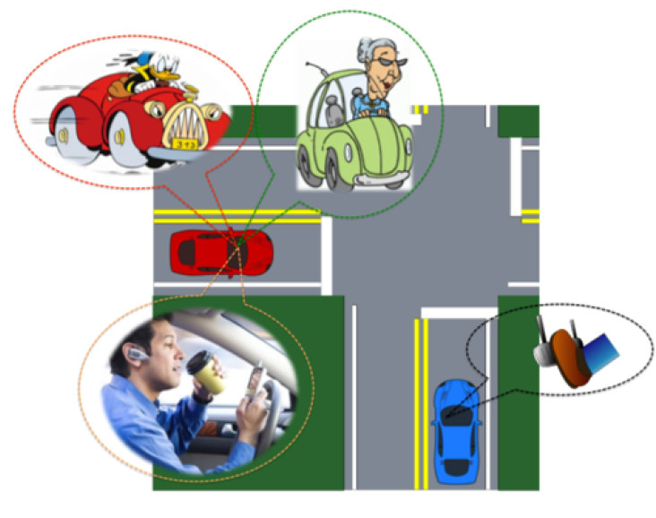
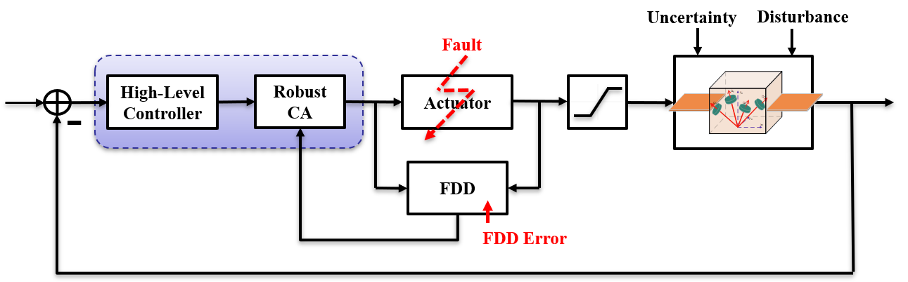

Qiang Shen – Selected Projects
Affine Abstraction-Based Active Model Discrimination
|  | The dynamics of smart systems, such as smart buildings, autonomous vehicles, and intelligent transportation, are almost always complex (nonlinear or hybrid), it is desirable to compute a simpler conservative approximation or abstraction that “includes” the dynamical characteristics of the original systems, for which (robust) controller/estimator designs may be easier than for the original complex systems. In this project, we design an affine abstraction method to over-approximate the original nonlinear vehicle dynamics and then develop an active model discrimiation approach to actively identify the true intention of the vehicle while simultaneously optimizing for safety and comfort (with minimal change in input). The vehicle's unobserved intentions are assumed to be inattentive, cautious, or aggressive, and each of them can be regarded as a different system operating mode. The active model discrimination problem aims to find optimal separating inputs that guarantee that the outputs of all the affine models cannot be identical over a finite horizon. The developed acitive model discrimination method can also be used to identify a fault type or an attack strategy in cyber-phisical systems. |
Fault-Tolerant Control for Spacecraft Attitude Control System
In safety-critical systems such as spacecraft and aircraft, reliability is particularly important as a minor fault in such systems can result in signicant performance degradation or even instability. The attitude control subsystem of a 3-axis stabilized spacecraft is of great importance in many space missions, and the life of attitude control components essentially decides the operational life of a spacecraft. Its degradation can signicantly disrupt mission performance, and its failure is fatal to the spacecraft.
This project aims to enhance the reliability and reduce the critical failure of spacecraft from the model-based fault-tolerant control (FTC) system design perspective. Generally, the available FTC approaches can be classied into two categories: active FTC and passive FTC. In this project, both active and passive FTC approaches are developed for attitude control systems of spacecraft to improve reliability and safety while achieving fast and high-precision attitude maneuver in the presence of external disturbances, inertia uncertainties, and actuator saturation constraints.
|  | A robust control allocation (CA) based FTC system. The high-level controller is to compute the total control efferts such that system stability and control performance are maintained. The robust CA is to distribute the total control effects to each actuator optimally without causing further acutuator damages. |
Rigid-Body Attitude Maneuver under Multiple State Constraints
 |
In practical spacecraft implementations, some sensitive instruments are required to point thier boresight along a target inertial direction while kepting away from unwanted celestial objects or bright sources of energy. For example, the infrared telescopes may slew from one direction to another without direct exposure to the sun vector or other infrared bright regions in space. In addition, due to the saturation limit of low-rate
gyro or mission specification requirement, the spacecraft's angular velocity is also constrained. |
Please feel free to contact me should you be interested in my research.